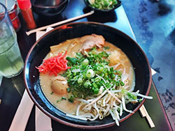

We're all about serving various dishes in Japanese Cuisine!
If you haven't tried anything yet, try our signature dish: the Daikoku Ramen!

Daikoku Ramen is noodles, boiled egg, seasoned bamboo shoots, bean sprouts, and green oninon in pork soup, with tender slices of homemade pork belly chashu.